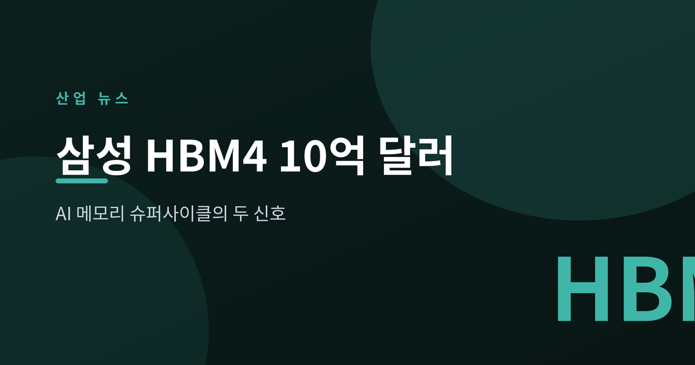
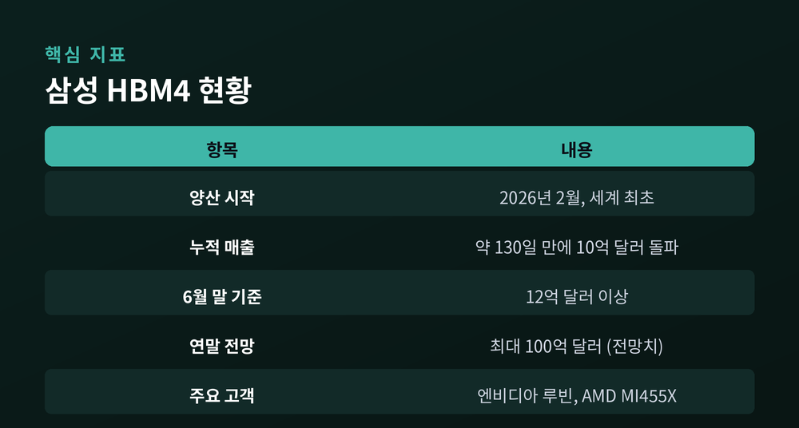
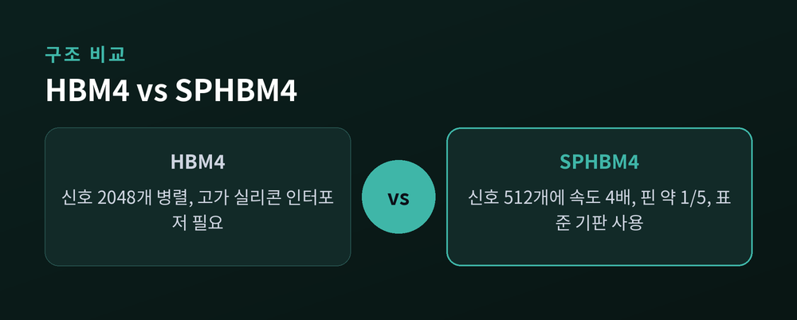
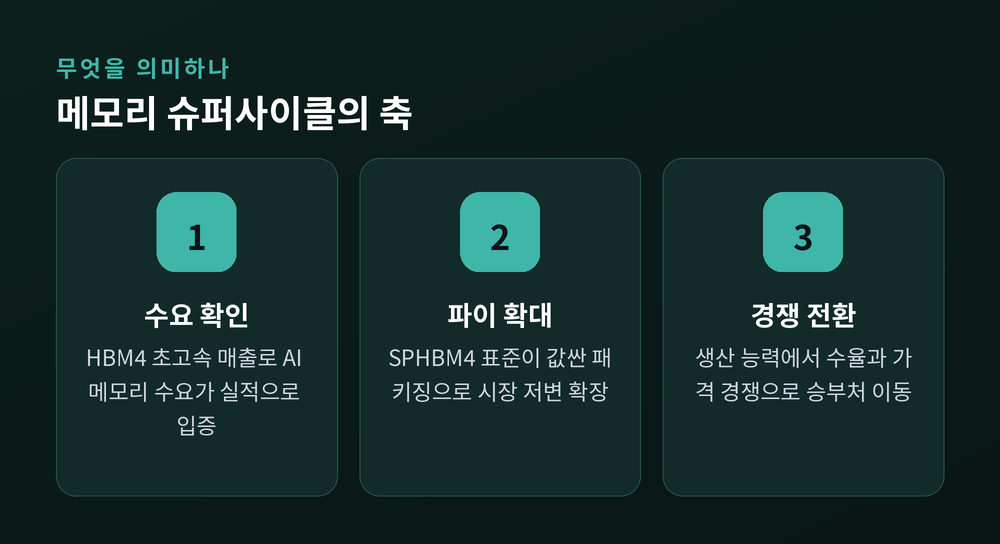

AI 메모리 슈퍼사이클이 던진 두 개의 신호

지난 6월, 반도체 업계에서 상징적인 소식이 하나 나왔습니다. 삼성전자가 올해 2월 세계 최초로 양산한 6세대 고대역폭 메모리 HBM4가, 출시 약 4개월 만에 누적 매출 10억 달러를 넘어섰다는 발표입니다. 그리고 며칠 앞선 21일, 국제 표준기구 JEDEC은 HBM의 오랜 고민을 겨냥한 새 표준 하나를 조용히 승인했습니다. 두 소식은 따로 떨어진 사건이 아닙니다.
삼성전자는 2026년 6월, HBM4가 양산 약 130일 만에 누적 매출 10억 달러를 돌파했다고 밝혔습니다. 6월 말 기준으로는 12억 달러를 넘어섰고, 연말에는 최대 100억 달러 규모까지 성장할 수 있다는 전망도 함께 제시했습니다. 신규 메모리 제품이 출시 첫해에 이 정도 매출을 내는 것은 유례가 없다는 평가가 나옵니다.
수요의 배경은 명확합니다. 엔비디아의 차세대 AI 가속기 '루빈(Rubin)', 그리고 경쟁사인 AMD의 'MI455X'에 삼성 HBM4가 우선 공급되고 있습니다. 엔비디아, AMD, 브로드컴, 구글 등 빅테크들은 안정적 물량 확보를 위해 장기공급계약(LTA)을 요청하고 있고, 일부는 이미 계약을 맺었습니다.

같은 6월, JEDEC은 'SPHBM4(Standard Package HBM4)' 표준을 최종 승인했습니다. 이 표준이 겨냥한 것은 HBM의 고질적인 약점, 바로 '비싼 패키징'입니다.
기존 HBM4는 데이터 신호 2048개를 촘촘히 연결하기 위해 실리콘 인터포저라는 고가의 기판 위에 칩을 얹습니다. SPHBM4는 발상을 바꿨습니다. 신호를 512개로 줄이는 대신 신호 속도를 4배로 높여, 같은 대역폭을 유지하면서 필요한 핀 수를 약 5분의 1로 줄였습니다. 그 결과 값비싼 인터포저 없이 일반 유기 기판에도 HBM급 메모리를 실을 수 있게 됩니다.
즉 한쪽에서는 최고급 HBM4가 폭발적으로 팔리고, 다른 한쪽에서는 그 HBM을 더 싸게 만들 길을 표준이 열고 있는 셈입니다. 시장의 파이 자체가 커지고 있다는 신호입니다.

HBM4 세대의 특징은, 삼성·SK하이닉스·마이크론 세 회사가 양산 초기부터 모두 품질 인증(퀄)을 통과했다는 점입니다. 과거처럼 '누가 만들 수 있느냐'가 아니라, 이제는 '누가 더 높은 수율과 더 나은 가격으로 공급하느냐'가 승부처가 되었습니다.
SK하이닉스는 엔비디아 루빈용 HBM4 시장에서 약 70% 점유율을 차지할 것이라는 전망(UBS 추정)으로 여전히 선두입니다. 삼성은 AMD 주공급사 지명 등으로 빠르게 추격하고 있습니다. 표준·수율·고객 확보가 동시에 걸린 삼각 경쟁이 본격화되고 있습니다.

정리하면, 삼성 HBM4의 초고속 매출은 AI 메모리 수요가 실제 실적으로 확인되고 있다는 증거이고, JEDEC의 SPHBM4 표준은 그 수요를 더 넓은 시장으로 확장하려는 산업의 준비입니다. 다만 '연말 100억 달러'나 점유율 수치는 아직 전망·추정치라는 점은 기억할 필요가 있습니다.
핵심 메시지 한 줄: AI 시대의 병목이자 기회는 결국 '메모리'에 있으며, 경쟁은 생산 능력에서 수율과 가격으로 옮겨가고 있습니다.
지금은 세 회사가 같은 출발선에 선 드문 순간입니다. 이 슈퍼사이클의 진짜 승자는, 표준이 바꾼 규칙 위에서 누가 먼저 균형점을 찾느냐에 달려 있습니다.